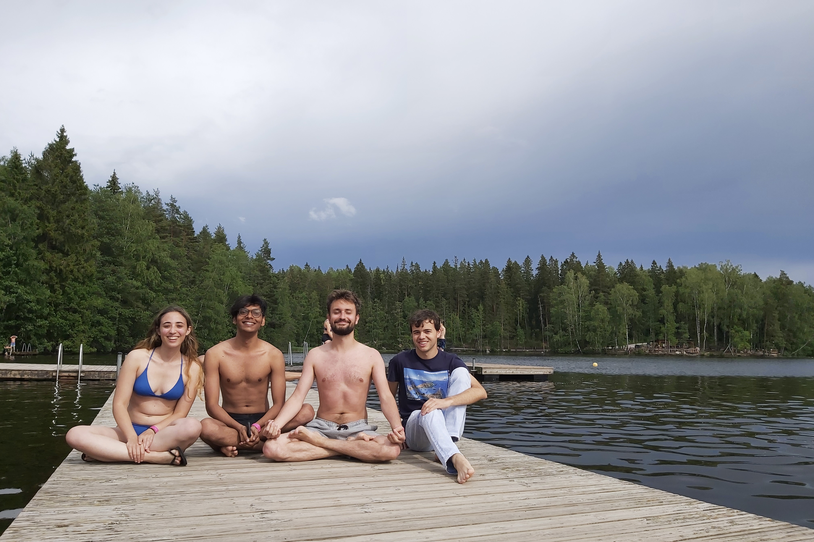
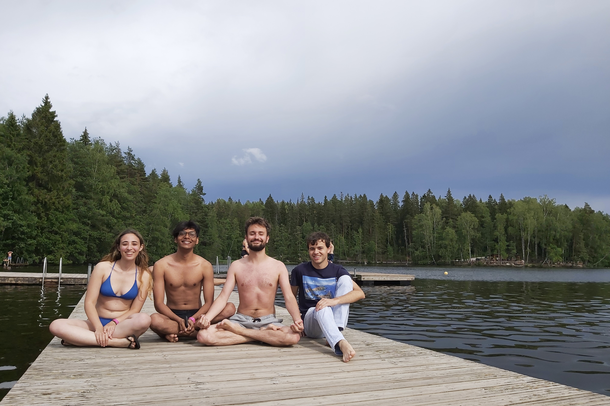
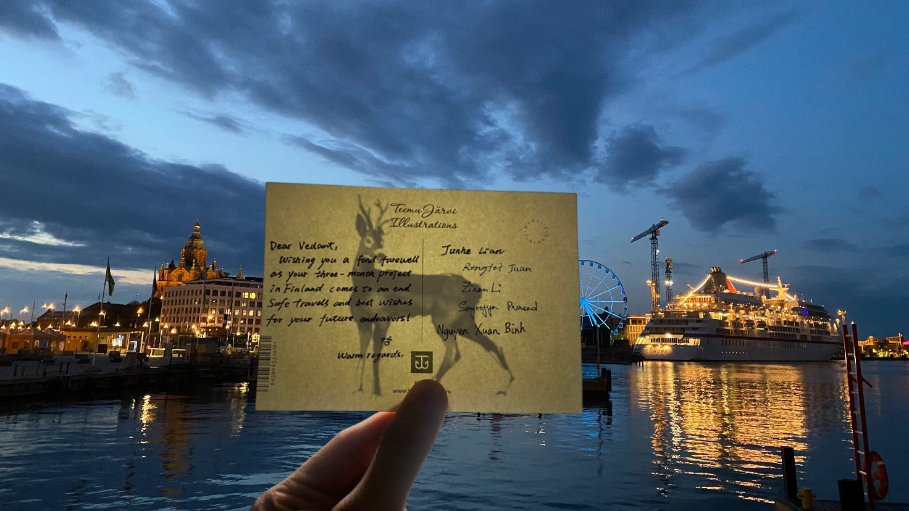

Introduction
Welcome to my blog! This isn't just about my internship journey but a tale of how a curious student took a leap of faith to explore his passions. I traveled far from home, all the way to Aalto University in Finland. There, I learned a lot, experienced a new culture, and grew as a person. So, join me as I share my experiences from this Finnish adventure.
Honestly, my first international trip, especially going solo, was a bit scary and full of unknowns. I had yet to learn what to expect, what food I'd eat, or how to get around. But looking back, I think these uncertainties actually made the trip more fun and exciting! I was able to learn and grow so much from this experience, and I hope you can, too. So, let's get started!
How I got in?
After delving into the domain of optimization methods, I yearned for an on-site international experience. I wanted to see how things were done on a global scale, particularly in my field of interest. So, I began applying for opportunities abroad that aligned with my interests. That's when I stumbled upon the Aalto Science Institute (AScI) international summer research program. Hosted by Aalto University, this program was a golden opportunity for me to broaden my horizons.
The application process was comprehensive. It required a personal statement, my resume, a Letter of Recommendation (LOR), and a priority list of three projects that piqued my interest. The program was highly competitive, attracting applications from over 84 countries. Out of a pool of 1600 applicants, only 60 were chosen, and I was fortunate to be one of them. My top priority project, titled "Optimizing the Parameterization of a Universal Failure Model for Hydrogen Storage Applications," was selected. This project focused on developing an iterative parameter calibration pipeline for hardening laws on the Finnish high-performance cluster. It was an exciting prospect, and I was eager to get started.
The Journey
Brimming with excitement, I was all set to embark on my journey. Having never been to Europe, the prospect of exploring a new culture was thrilling. I was particularly eager to meet my project mentor, Prof. Junhe Lian, and the other interns and learn about their projects. My journey to Finland started with a plane ride from Mumbai, which was a leap into new experiences. Packed with warm clothes and a good supply of home-cooked Indian food, I was ready for my adventure in Helsinki. The excitement was palpable as the plane took off, marking the start of a new journey for me.
I arrived in Helsinki on May 7th, 2023. The city's calm and serenity struck me. It was so different from the bustling life I was used to in Mumbai. I remember dragging my luggage from the airport to the waiting car, where I was greeted by a friendly driver who took me to my accommodation. I was staying at a rented student housing in Ruoholahti, which was a short metro ride from the university. The housing was well-furnished and had all the amenities I needed. I was also pleasantly surprised to find a sauna in the building. I was told that saunas are a big part of Finnish culture, and I was excited to try them out.


The very next day, I visited Aalto University. The campus was buzzing with students, and I was impressed by the vibrant academic atmosphere. I met my project mentor, Prof. Junhe Lian, who was kind and friendly. He gave me a lab tour and introduced me to the other interns. I also met other professors and researchers and was excited to learn about their projects. My first day at the lab was a deep dive into my project. Meeting my advisors, I felt a rush of responsibility and eagerness to start. They had high hopes for me, and I didn't want to disappoint them. Coming from a core engineering background, I found the project challenging as it involved learning about Linux, high-performance computing, Bayesian statistics, and modular programming – all new to me. But, with the support and guidance of my advisors, Mr. Binh, Ms. Rongfie, and Ms. Zinan, I gradually found my footing.


The ensuing weeks were a whirlwind of work, fun, and cultural immersion. Each day at the lab was a new challenge, a step outside my comfort zone. Despite my engineering background, I found myself diving headfirst into programming, learning Python, and grappling with data analysis. It was tough, but the thrill of overcoming each challenge and seeing my growth was exhilarating. Lunches with fellow interns felt like mini world tours. We exchanged stories, experiences, and a piece of our homelands. I heard tales of an idyllic Italian village, learned about life in China, and shared snippets of my life in India. Evenings were reserved for exploration. I marveled at the architectural beauty of the Helsinki Cathedral, the historic Senate Square, and the iconic Sibelius Monument. A visit to the Suomenlinna Sea Fortress, a UNESCO World Heritage Site, left me in awe of the city's rich history. The local cuisine was a delightful discovery. I developed a particular fondness for "Karjalanpiirakka," or Karelian pies, a Finnish specialty. And then there was the sauna, a quintessential Finnish experience. The idea of a steam bath with no clothes was initially a cultural shock. But soon, it became a refreshing and natural part of my routine.


 



The above card was given to me, by my professor and my advisors, on the last day of my internship. It was a very emotional moment for me, as I had grown very close to them. I will always cherish this card and the memories associated with it. As I pen down these memories, I'm filled with gratitude for the experience and excitement for the future. This journey has inspired me to pursue a graduate degree and explore more of what I love. It has taught me to embrace new challenges and be open to different perspectives. I hope that by sharing my story, I can inspire you to embark on new adventures, learn from different cultures, and grow as an individual. Here's to embracing the unknown and the beautiful surprises it brings!
Thank you for reading this blog. I hope you enjoyed it. If you have any questions or feedback, please feel free to contact me on my LinkedIn.